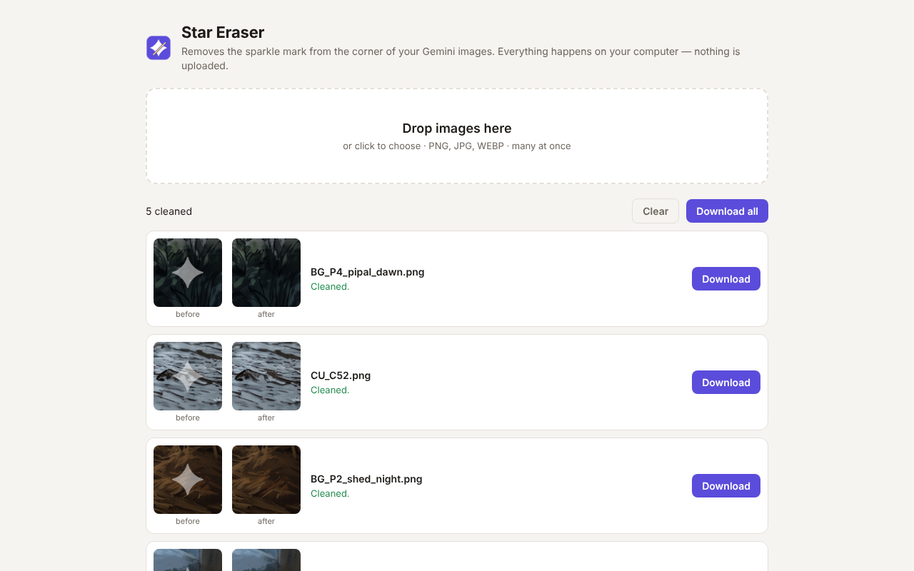

Remove the sparkle from the corner of your Gemini images. Free, private, on-device.

The sparkle is a semi-transparent white shape laid on top of your picture. Star Eraser doesn't blur it or paint over it. It reverses the blend mathematically and recovers the original pixels underneath, so fine lines, textures and dark scenes stay sharp. It also checks its own work: if an image has no sparkle, it's left untouched.
Found an image it doesn't clean properly? Open an issue on GitHub and attach the image if you can.